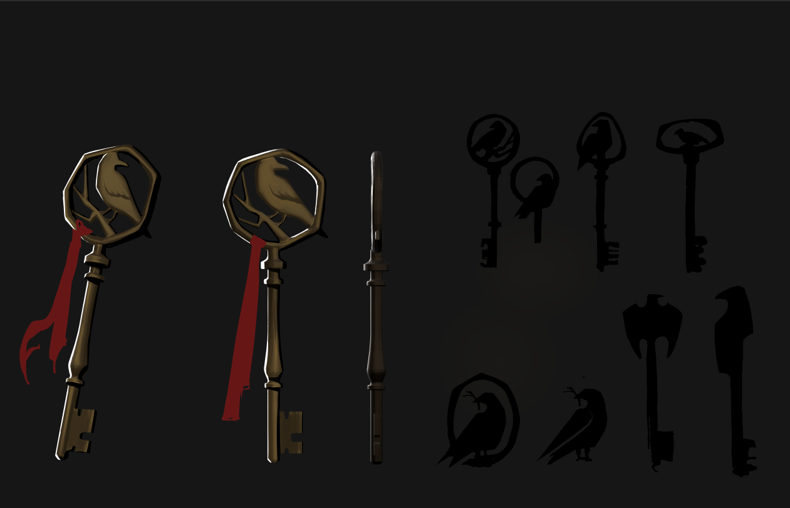

What remains when the light gives up on something.
Isometric rooms, objects, and buildings, held together by where the light is allowed to fall and where it isn't. Painted, then some of it built out in three dimensions.
Isometric rooms, objects, and buildings, held together by where the light is allowed to fall and where it isn't. Painted, then some of it built out in three dimensions.
Environment artist and illustrator working across comics and games. The pieces below are from an original graphic novel currently in production.


Full isometric interior, painted. Fireplace and window light doing most of the work — this is the piece the rest of the portfolio's mood is built around.


Built and lit in Blender — warm window light against a cool dusk exterior, weathered wood and dock clutter for wear.


Concept drawing carried into a full 3D build — kitchen line art alongside the finished Blender render of the same space.


A key story prop, from first thumbnail passes through to the finished piece — binding, ribbon, and seal all went through several rounds before landing.

